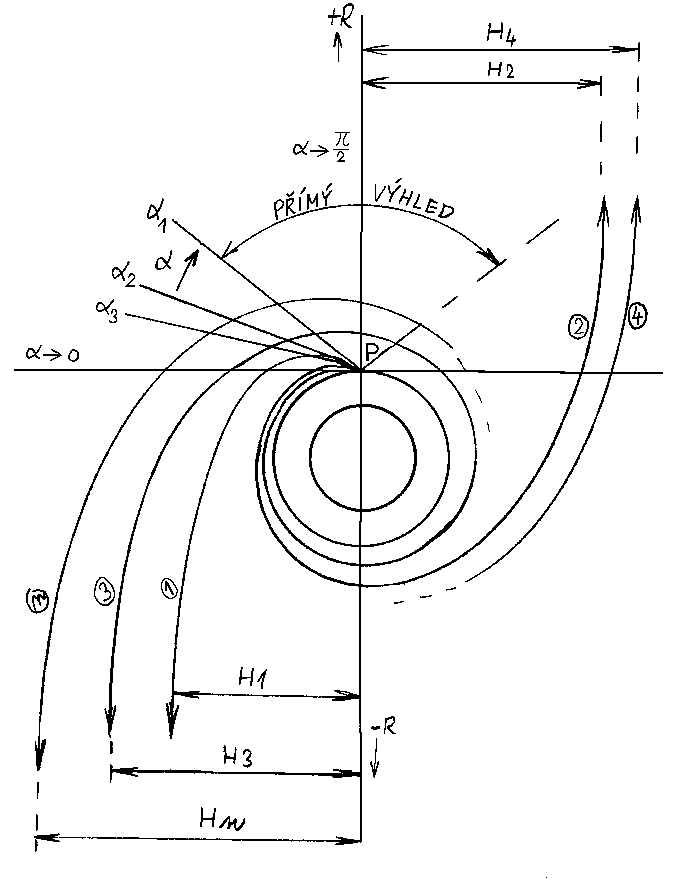

Kolapsar
29.8.2020: Obsah níže prohlašuji za (značně nepovedenou) betaverzi, která se přes původní úmysl už nebude aktualizovat a opravovat. Aktuální verze hypotézy se připravuje.
KOLAPSAR
Dobrý den, vítám Vás na své stránce. Poslední aktualizace 28.března 2005.
Průběžně opravuji chybky a nepřesnosti, takže sledujte aktuální verzi.
Podstatné opravy, provedené nedávno jsou tyto:
-v kapitole princip kolapsaru formulace, související s kvantovým záření černých děr (28.03.2005)
-kapitola résumé -celá změněna z důvodu jako o řádek výše (27.03.2005)
Zde je OBSAH a ÚVOD_
Zde je stručné RÉSUMÉ_1
Pokud Vás napadají otázky jako "...kam jsem se to (sakra) dostal?" a
O ČEM TO TADY JE?
Tak začněte číst nejlépe úvod, či při dobrém rozmaru místo úvodu můj:-)
ROZHOVOR S *
Résumé je jakýsi výcuc, pravděpodobně nebude pro první čtení příliš srozumitelné.
ing. ZBYTOVSKÝ Jiří
RÉSUMÉ 1:
Zde je stručný souhrn. Podrobné vysvětlení téhož v následujícíc kapitolách.
1)Tato práce je o alternativím modelu kolapsaru. Je o způsobu zkolabování hmoty do objektu podobného černé díře, ale ta černou děrou není.
2)není černou dírou proto, že není splněna podmínka pro vznik horizontu a to způsobem co nejvíce těsným a platícím současně pro všechna vnitřní R
3)Toto nesplnění podmínky znamená konkrétně to, že každá sféra poloměru R uzavírá v sobě o něco méně hmoty, než by právě stačilo na vznik horizontu
podle vztahu: Rg=2mG/c^2 tedy m(R) < r*c^2 2g=""
4)Pro kolapsar je typické, že relativní míra nesplnění rovnosti je minimální:
Přesné stanovení není pro úvahy podstatné, krom toho je s časem a hloubkou proměnlivé.
Velmi zhruba počítejme s relativní odchylkou delta 10^-10 až -40 pro povrch kolapsaru hvězdné velikosti. S hloubkou toto delta dále klesá, ale nikdy nedosáhne nuly. Ev. mohu užívat gamma=1/delta
5)Velikost tohoto hausnumera o velikosti delta opravdu není pro funkčnost úvah -tedy principiální pochopení- třeba zpřesňovat. Jde v principu o popis zákonitostí, které mají infinitezimální charakter. Nicméně cestu a doslova návod k tomu, jak to konkrétně spočíst uvedu níže.
6)z 3) plyne, že nepatrná část hmoty (celkové m*delta) kolapsaru se nachází nad Rg, což není označení pro horizont, ale velikost souřadnice R, kerá by byla horizontem teprve tehdy, kdyby se ono nepatrné množství hmoty nad Rg nenacházelo. To platí i pro všechna vnitřní R Proto horizont není ani na Rg ani kdekoliv pod ním. Specifická podmínka pro nevzniknutí horizontu vede k tomu, že hustota na R je nepřímo úměrná čtverci poloměru.
7) Body 1-6 jsou nástinem, uvedeným v předstihu. K všem těmto tvrzením se lze dostat kauzálním vyvozováním, které je založeno pouze na těchto dvou předpokladech:
8) máme centrální gravitační pole, buzené hmotou, která je soustředěna do oblasti tak malé, že nelze observačně zjistit s nekonečnou přesností, zda hmota je opravdu všechna pod horizontem, či zda její část přesahuje s mírou "delta"
Takto bychom při troše poctivosti mohli nazvat i opravdovou černou díru, kdybychom ji měli k dispozici na měření přímo u nosu.
9) To hlavní spočívá v předpokladu, že tento objekt (8) skutečně tepelně září a to právě z té hmoty, která přesahuje o to delta. Vizuálně to však pro malost delta vypadá, jakoby tam byl horizont a ten tepelně zářil. Tento podivně ad hoc působící předpoklad pochopitelně později zdůvodním. Zatím ho čtenáři prosím s ostražitostí :-) přijmi.
10) Podobnost s Hawkingovým zářením je náhodná, zde počítám se zářením kolapsaru skutečně lokalizovaném dostatečně blízko horizontu. Což není v rozporu s tím, že tam žádný horizont není.
Naopak předpoklad lokalizace uvnitř je v souladu se zadaným rozložením.
11) Lze rovněž počítat s tím, že efektivní teplota takto zářícího kolapsaru je o mnoho řádů vyšší, než případné kvantové záření. Tato poznámka má význam pro přímou ověřitelnost mé teorie kolapsaru. Stačilo by zjistit, že kolapsar, který vypadá jako černá díra pouze sám o sobě (bez akrečních jevů) vyzařuje mnohem víc, než dává výpočet HZ a vše řečené z toho vyplyne.
12) A vyplyne z 8) a 9) takto: Sledujme tok záření z kolapsaru fyzickým, ideálně odolným pozorovatelem, spouštěným na idealizovaném laně dovnitř kolapsaru odněkud z normálního prostoru, třebas z výše 3Rg.
Idealizované lano není nezbytné, jde jen o pomůcku představě, že pohyb pozorovatele je prakticky statický vůči soustavě kolapsaru.
13) Budeme sledovat hustotu energie záření jako funkci R přepočtenou na pozorovatele na 3Rg
k tomu nám pomůže sledovat: efektivní teplotu fotonů, početní hustotu fotonů, lokální hustotu energie,
14) Mezi 3Rg a 1.5Rg, tedy až k fotonové orbitě bude platit, že množství fotonů, které proletí každou slupkou o velikosti v tomto rozsahu, bude za jeden tik hodin horního pozorovatele Konstantní.
15) lokální energie fotonů, viděných lokálním pozorovatelem (na tom laně) bude s hloubkou růst a to přesně v relaci zpomalení jeho hodim oproti hodinám horního pozorovatele. Dolnímu se ovšem jeví, jakoby se zrychlily hodiny horního. (Horní nemusí být v nekonečnu, protože míru zteplání fotonů zde vztahujeme taky k němu)
To platí v plné míře i pod Rf (Rf je souřadnice fotonové orbity)
16) lokální ohřev fotonů gravitačním modrým posuvem dle 15) nemá vliv na velikost jejich efektivní hmotnosti, přepočítané navenek. Z hlediska vnějšího pozorovatele je volný pohyb jakékoliv částice v gravitačním poli pohybem částice s konstantní hmotností. To platí obecně.
17) Konstantní počet fotonů tekoucích jednotlivými sférami pro R>Rf nám dovoluje tvrdit, že jejich "kusová" hustota klesá se čtvercem Schwarzchildovy souřadnice R a to přesně.
Kdyby všechny fotony byly přesně radiální platilo by to i pro hustotu energetickou (ró).
18) Vzhledem k tomu, že v blízkosti Rf roste odchylka drah fotonů od čisté radiály, zmenšuje se různě i jejich radiální průmět rychlosti. To v průměru zvyšuje hustotu ró oproti té čistě kvadratické závislostí radiálních fotonů, ale tento vliv je nepatrný.
19) Na Rf dosáhne velikost zorného úhlu kolapsaru pro spouštěného Pí -kolapsar se bude z Rf jevit jako nekonečná rovina. Výhled na vesmír bude rovněž se zorným úhlem Pí. Bude ovšem vidět kompletní a ještě mnohonásobně. Podrobnosti v kap. "výhled z fotosféry"
Dalším poklesem dolů se bude dále úhel výhledu na vesmír zmenšovat.
20)Úhel výhledu na vnější vesmír je důležitý pojem. Budu mu říkat velikost výhledu. Je to lokální směr krajních nulových geodetik ze svazku geodetik, které všechny míří do vnějšího vesmíru. Pro lokálního pozorovatele je to čistě vizuální pohled na vnější vesmír, či směr k němu.
21)u černé díry by velikost výhledu klesla na nulu přesně na horizontu. To je ekvivalentní dosažení únikové rychlosti světla.
22)u mého kolapsaru není již z definice možné, aby velikost výhledu klesla na nulu a to libovolně hluboko. Může se však však k té nule blížit řádově tak těsně, kolik činí delta. Uzavírání prostoru není nikdy úplné a foton může teoreticky vyletět i zprostředka s konečnou, byť velkým činitelem zchladnutí (=poměr frekvencí = rudý posuv + 1)
23) Složka toku fotonů, kterou jsme sledovali nad Rf (tj všechny nad Rf) jsou v jakékoliv hloubce směrovány do výhledu.
24) Míru uzavření prostoru v místě pozorovatele lze vyjádřit jako poměr mezi prostorovým úhlem kolapsaru a výhledu. Tato hodnota by rostla u černé díry na horizontu nade všechny meze.
25) v našem případě je míra uzavření prostoru součinitelem, kterým se zvětšuje počet fotonů procházejících libovolnou slupkou o R menším, než Rf
Tímto faktorem se při výpočtu ró(R) musí násobit hustota, ke které bychom došli v případě uvažování čistě radiálních směrů fotonů.
26)Názorně to lze pochopit tak, že pod Rf se objevují fotony, které vyletěly stejně zhloubi, jako ty, co překonaly Rf a odlétají do nekonečna. Ty jiné fotony však mají pouze sklon dráhy takový, že se netrefí do výhledu. S hloubkou roste progresívně podíl mezi vracejícími se a vyletivšími. Tento podíl může růst velmi vysoko. (faktorem cca 1/delta) reálně přítomné budou obě složky. Ta složka hustoty od vyletivších bude fixní, protože počet fotonů, které je tvoří je na všech R stejný. Výsledná bude součet obou. S těsnou limitací k Rg může dosáhnout libovolné potřebné hodnoty.
27)ta potřebná hodnota je taková hustota, při níž je právě těsně nesplněna podmínka 3)
Při nulovém delta by to na R činilo přesně třetinu průměrné hustoty černé díry o velikosti R. Vzhledem k 4) to bude tato hodnota, zmenšená faktorem (1-delta), což je prakticky totéž. Tato hodnota hustoty je napojením vnějšího průběhu hustoty záření a vnitřního průběhu hustoty dle podm 3)
Budiž dále Rg nazýván gravitační poloměr daného shluku hmoty, bez ohledu na to, zda je na Rg horizont.
Polní podmínka existence horizontu v místě o konkrétním velikosti souřadnice R tedy spočívá v tom, zda množství hmoty, uzavřené ve sféře R, je dle uvedeného vztahu dostatečné, či nikoliv. Pokud je jí přesně, jsme právě na horizontu. Pokud je hmoty méně, znamená to, že na horizontu nejsme a ten může být buď někde pod námi, anebo tam taky nemusí být vůbec.
Toto tvrzení by se mohlo někomu zdát legrační svou samozřejmostí. Vždyť např. na povrchu Země podmínka vzniku horizontu evidentně splněna není, hmota Země by mohla vytvořit horizont o velikosti asi půl centimetru, ale nevytvoří, protože během sestupu na Rg Země se nevyhneme tomu, abychom většinu její hmoty nechali nad sebou, takže to, co zbyde pod námi na splnění podmínky s velkou rezervou opět nestačí.
Triviálnost se poněkud vytratí, jakmile se zeptáme, na jak blízko se můžeme přiblížit ke shluku hmoty, (tj. ve srovnání s jejím Rg) aniž by to znamenalo nutnost vzniku horizontu.
Lze snadno ukázat, že dokud nebudeme kdykoliv opravdu totálně a úplně přesně na horizontu, můžeme se přiblížit k Rg libovolně těsně a VŽDY existuje možnost užít fintu s míjením hmoty k tomu, abychom horizont při sestupu nenašli.
Položme si otázku, kolik konkrétně hmoty musíme začít míjet, tedy, jaká musí být okolo hustota, jestliže chceme jít až limitně natěsno k Rg a teprve až na poslední chvíli zabránit vzniku horizontu tím míjením hmoty. Je zřejmé, že potřebná hustota, se kterou se musíme setkat, aby to stačilo, nebude ledajaká.
V případě hmoty Země jsme měli v tomto směru dost možností. Pokud nám nešlo o zachování Země v její podobě, ale jen o to, abychom nenarazili na horizont z její hmoty, či části její hmoty, tak jsme při sestupu mohli klidně splnit vakuovou podmínku (čili žádnou hmotu nemíjet) až na dosti malé R a pak tu hmotu míjet v podobě nějakého elektronově, či neutronově degenerovaného koncentrátu a to libovolně způsoby.
Půjdeme li ovšem natěsno k Rg, tak se část volnosti ztratí, do "míjení hmoty" se bude třeba dát pořádně, tedy bude třeba dodržet určitou minimální mez hustoty.
Pro lepší představu: když budeme sestavovat kolapsar řízenou akrecí idealizovaně tak, že v každé sféře R je přesně tolik hmoty jak odpovídá R c^2/(2 G) a to pro všechna vnitřní R čili prakticky každý přírůstek hmoty by se zastavil těsně nad souřadnicí Rg, aktuální pro něj v době jeho akrece, tak vidíme, že výsledná složenina je vlastně jakási "akrečně extrémní" černá díra, kde podmínka pro horizont je přesně splněna současně na všech R.
A to s funkcí hustoty ró(R)dif = c^2 /(8 Pí G R^2) viz níže. Takto sestavená černá díra je pochopitelně fyzikální idealizací a sestavit takový objekt reálně nejde.
Jestliže nyní buďto na všech R příslušnou hustotu zmenšíme, nebo danou hustotu umístíme na větší poloměr a to třebas faktorem, který může od jednotky lišit jen sebe nepatrněji, horizont okamžitě zmizí a máme objekt, s funkcí hustoty, pro niž je funkce ró(R)dif aproximací. Takový objekt již fyzikálně realizovatelný je, alespoň teoreticky právě tím postupným skládáním. V každém případě, když se teoreticky noříme do takového objektu shora, tak míjíme hmotu recipročně tomu, jak jsme ji tam podle předpisu skládali.
Nazvěme hustotu, potřebnou k tomu úkonu těsného míjení hustotou mezní a vyjádřeme ji jako funkci R:
protože u černé díry celková hmotnost:
m = R c^2/(2 G)
celkový objem díry (zvenku vzato):
V = Pí R^3 4/3
bude průměrná hustota čd m/V:
ró(R)celk = 3 c^2 /(8 Pí G R^2)
podobně diferenciálně:
z přímé úměry mezi m & R plyne přírůstek hmoty všude:
dm = dR c^2/(2 G)
a element objemu dV na R bude dR krát plocha slupky:
dV = dR 4 Pí R^2
a přírůstková hustota dm/dV jako fce(R) bude:
ró(R)dif = c^2 /(8 Pí G R^2)
Diferenciální hustota mezní, nebo také by se jí dalo říkat kritická, je tedy kromě případu R->0 vždy konečná a není příliš veliká. Je pro všechna vnitřní R právě třetinová ve srovnání s populární průměrnou hustotou čd. Tento výsledek je podstatný. Znovu opakuji její fyzikální význam: je fyzikální limitou hustoty hmoty kterou musíme míjet při sestupu, abychom nesplnili podmínku horizontu, pokud jsme se přiblížili až těsně k Rg a to co nejvíce těsně.
_______________________________________________________
Na toto rozložení hmoty se tedy napojí průběh funkce hustoty záření.
Důsledek rozložení hmoty:
z metrického tenzoru Schwarzchildova řešení plyne, že libovolně těsně nad horizontem černé díry roste do libovolné výše lokální činitel radiální dilatace vlastních vzdáleností. Tato dilatece vlastních vzdáleností způsobuje konkrétně u černé díry, že vlastní vzdálenost například z fotonové orbity k horizontu není 0.5 Rg, ale o něco více. Rozdíl však není příliš velký. Výpočet se provádí integrací metrického tenzoru odněkud někam a konečnost výsledku přes formálně nekonečně velkou dilataci v bodu na horizontu je způsobena konvergentností integrálu. Laicky by se dalo říci, že nekonečná dilatace zasahuje nekonečně krátký interval, což pro velikost příspěvku tohoto úseku dává neurčitý výraz, jehož velikost je po vyčíslení zanedbatelná. A podobně pro ostatní úseky.
Složení kolapsaru si můžeme přiblížit přirovnáním k té černé díře, k níž těsně nad horizont přidáváme slupky hmoty tak, aby vznikl v nenulovém rozsahu poloměrů jakýsi obal, v němž by součinitel dilatace neklesal ale držel se konstantní (např). Je evidentní, že to při určitém průběhu hustoty jde. Velikostí těsnosti (delta) můžeme nastavit součinitel té konstantní dilatace libovolně vysoko. Pak vlastní vzdálenost ve směru radiální síly obalu může být libovolně veliká.
Totéž může platit až doprostřed, pokud černou díru vypustíme a na jejím místě definujeme rekurentně stejná pravidla, jako v obalu.
V zásadě lze psát přímo, že vlastní vzdálenost z vrchu kolapsaru doprostřed L = Rg/delta
Jde o aproximaci pro delta = konst, což nemusí být splněno ale je evidentní, že s limitací delta k nule s hloubkou zda máme k dispozici faktor, prodlužující vlastní vnitřní vzdálenosti prakticky nad libovolné meze.
Současně je toto jediný způsob, jak dosáhnout extremizace těchto vzdáleností brz rotace a náboje pouhým zadáním funkce hustoty.
Protože toto je založeno na geometrické interpretaci Schwarzchildova řešení, je zřejmé že nebudou dilataci podléhat centrální kružnice.
Rozložení hmoty prostor uvnitř kolapsaru vytvoří jakýsi "chobot" s velkou štíhlostí.
pokus s lanem. (Tato úvaha platí pro statické rozložení i statické lano)
Z výpočtu geogetiky částice, umístěné uvnitř, plyne, že na ni bude uvnitř působit intenzívní přitažlivá síla.
Naproti tomu při pokusu s lanem tam bude nastávat pokles síly na horním konci lana u navijáku téměř k nule pro závaží uvnitř kolapsaru, protože plyne víceméně ze stejných předpokladů, jako ten pokus v případě černé díry. Vnitřek kolapsaru (ve statickém zjednodušení samozřejmě) bez horizontu bude samozřejmě otevřen tomu, aby jej opustil foton teoreticky z jakékoli hloubky. To odpovídá možnosti odebrat na tom navijáku právě téměř celý EQ m0 a NE více. Dilatace radiální (co nám tam dělá ten reálně dlouhý chobot) pak způsobí tu délku lana a s využitím faktu, že nelze získat víc, než EQ. pův. m0 -z toho ten pokles síly nevyhnutelně plyne. To závaží, které shora táhne málo, bude ve své soustavě "tížit" mnoho. Zřejmě tahová síla, přenášená lanem není invariant, ale bude relativní s faktorem zpomalení času.
STABILITA
Pokud zadefinujeme objekt podle statického zadání a všechnu jeho hmotu pomyslně "pustíme" do pádu, bude se dít toto:
Zvenku vzato se nic ve smyslu rizika vzniku horizontu neděje. Vrchní slupka záření se drží sama v silném gravitačním poli ve vznosu, protože fotony, byť vytvářejí tlak, samy ho nepotřebují k tomu, aby po vyzáření letěly ven (upřesnění níže). Jednotlivé pomyslné slupky v hloubce rovnoměrně zvyšují svou těsnost naložení k Rg, ale protože to dělají všechny současně, znamená to, že ten "chobot" se neustále (radiálně) prodlužuje a to teoreticky do nekonečna. Shora vzato je vidět, že ta hmota sice padá, ale ten pád je postupně zamrzlý v čase a případné vytvoření horizontu je i při zcela volném pádu hmot odsunuto do časového plus nekonečna vnějšího pozorovatele.
Tento děj má právo být považován za reálný oproti jevu namrzání slupek na horizont, což je jev čistě observační.
(Důvod je v tom, že když vidíme částici "namrzat" na horizont, tak víme, že částice padá po konečné dráze. To, že fotony teoreticky mohou přicházet z blízkosti horizontu ještě dlouho poté (pomiňme, že prakticky vzhledem ke kvantovým zákonitostem ani to ne), bych interpretoval spíše tak, že ten prostor těsně u horizontu se chová jako jakýsi "buffer" na fotony a konvence říkat, že těleso je tam, kde ho vidíme zde očividně podle silnějšího kritéria selhává. Tím silnějším kritériem je samozřejmě fakt, že maximální doba pádu čehokoli k horizontu se bude pohybovat okolo hodnoty dané konečnou vzdáleností děleno cé a to právě z pohledu vnějšího pozorovatele. I pro něj je ten úsek konečný a on díky tomu může vědět, jak dlouhý úsek budoucnosti může shlédnout padající před průletem. Je to max podíl z té vzdálenosti a nějaké o něco menší rychlosti, než c.)
Naproti tomu v mém kolapsaru se ta vzdálenost natahuje. Skutečně. Aby to takto fungovalo, zdůrazňuji, že je nutné počítat s tím, že všechna hmota v kolapsaru se zúčastní tohoto pohybu. (Ne, že bychom měli nějakou statickou konfiguraci a vyšetřovali pohyb testovací částice. Nicméně i v tomto případě by testovací částice padala doprostředka relativně dlouho.)
Tím se dostáváme k tomu, jak se to jeví té padající částici za předpokladu toho dynamického chování slupek.
Tedy:
a) -při statickém kolapsaru s nějakým konečně velkým (průměrným), ale v čase konstantním faktorem "delta" resp "gamma", spadne testovací částice z normálního prostoru, ale z těsné blízkosti kolapsaru dovnitř za konečnou vnější dobu, která bude růst nade všechny meze pouze, bude li nade všechny meze růst to gamma. Vyjma neurčitého případu nekonečného gamma, kdy výsledek nevím, bude čas pádu pro padající subjekt vždy velmi krátký -řádově Rg/c.
("gamma" je ze speciálky, dřív jsem psal "X", budiž zde použito jako míra zpomalení času ve statické soustavě vzhledem k těžisti kolapsaru jako funkce R, přičemž tou souhrnnou velikostí gamma myslím, že bude dostatečně velké v podstatném rozsahu poloměrů. Zřejmě bude gama s hloubkou rostoucí a to samé platí pro součinitel radiální dilatace, když budem věrni Scharzchildovským souřadnicím. A když subjekt- testovací částice nebude vůči těžišti kolapsaru v klidu, bude výsledný přepočet transformace času a prostoru složením transformací z "vně"->"dovnitř staticky" a z "uvnitř staticky"->"na uvnitř ve stejném místě dynamicky" -již dle STR.)
b) -při dynamickém kolapsaru (s tím postupným namrzáním všeho) je situace poněkud složitější, protože tím namrzáním dochází postupně k růstu toho gamma všude v hloubce (v nekonečném čase) nade všechny meze. Ten prostor se radiálně natahuje bez omezení a tím se reálně prodlužuje padající částici objektivní velikost dráhy doprostředka. Sice pro ni subjektivně to bude zkráceno (stejně jako v příp 1)) faktorem rychlosti jejího pádu, ale to bylo v př.1 taky ale bez průběžného růstu gamma.
Vidíme tedy, že i subjektivně z pohledu té částice je v tomto případě problematické tvrdit, že doba pádu bude max R/c, jako prve. Myslím že je dost evidentní, že max doba pádu doprostřed bude v principu cca ono R/c, ale navíc násobeno nějakým efektivním podílem z toho gamma. Přičemž gamma jde s časem k plus nekonečnu. To by mohlo na vyloučení obdoby "konce času v singularitě" již stačit. I když je to ještě poněkud neurčité. Viz c)
Avšak o tom, že zevní pohled v tomto případě nečiní potíže bych již nepochyboval. Samozřejmě zde pro všechny částice, z kterých se skládá kolapsar platí totéž, jako pro tu testovací padající (až na různá zpožděmí, kdy pro tu kterou pád začal)
c) -Zahrnutí dynamiky postupného namrzání všech slupek ještě není vše, co lze udělat pro přiblížení se reálnému popisu. Oba případy výše byly o volném pádu částice. Je zde ještě jedna věc -tou je decelerace každé padající částice při setkání s vrchní slupkou.
To souvisí s formou existence hmoty v kolapsaru. Je to prostě gravitační kompresí tak zahřátá hmota, že je ve formě jednostavové plazmy, jako při VT. Alespoň pro kolapsary rozumných rozměrů. Ta plazma z vrchní slupky samozřejmě volně září ven z kolapsaru, ale to záření je při letu ven tlumeno gravitačním posuvem plus faktem, že většina drah nemíří ven. Předpokládám však, že bude navenek o dost řádů silnější, než kvantové HZ a oproti němu bude u tohoto záření zcela bezproblémově lokalizován zdroj jako těsně u horizontu. Míra přesahu viz delta vrchní slupky. Ale v žádném případě pro jakoukoliv padající částici neexistuje možnost, jak se konfrontaci s tímto zářením vyhnout, jako tomu bylo u HZ.
Když něco padá dovnitř, tak zdálky sice je pád volný, ale těsně u Rg vzroste intenzita potkávaného záření, resp. jeho tlak faktoram gamma na druhou. (protože jedním gamma energetičtějčí fotony jsou potkávány staticky vzato a se zahrnutím rychlosti pádu částice se přinásobí to samé gamma.)
Naprosto enormní peklo tlakem záření zastaví v pádu cokoliv včetně jader neutronových hvězd. Pokud vím, tak nic kompaktnějšího neexistuje. Po zastavení pádu ve vrchní slupce bude síla tlaku záření daná jen místním gamma na prvou, ale protože velikost výhledu ven ztrátou rychlosti zlimituje skoro k nule, bude působit vnitřní záření ze všech stran, výsledná decelerace bude nulová. Zapadlá částice se dostane do TD rovnováhy se zářením uvnitř.
(při volném pádu se nám perspektiva vyvíjela tak, jako bychom se blížili ke prosté kouli o poloměru cca Rg -viz kapitola aberace a její složky. Myslím že to je celkem jednoduché.)
Existence malého, ale nenulově velkého výhledu vytváří zbytkovou malou výslednici tlaku záření ven, nebo dovnitř podle energetické bilance kolapsaru. Když tam nic nepadá, směřuje výslednice ven a stačí právě na udržení stability vnější slupky. Je to tedy přetlak záření, které to zde drží. V případě, že dál nic dovnitř nepadá, bude se taky hmota vnější slupky vypařovat ven.
V případě dalšího přísunu hmoty vytvoří tato novou vnější slupku a původní vnější se přebere roli vnitřní. Z hlediska dříve zapadlé částice se ta nová hmota naskládá do prostoru mezi jí a vnějším vesmírem do výseče výhledu. Připadlá hmota tak zacloní výhled ven. Podle velikosti intenzity jejího přísunu dojde k různě velkému pootevření výhledu jakožto směru geodetik, vedoucích ven. (to pootevření plyne ze změny pohybového stavu, způsobené tou padající hmotou. Bude-li jí hodně, bude mít záření z výhledu "přetlak", který bude urychlovat spodnější hmotu do dalšího pohybu dolů. Ale zevnitř to může znamenat pohyb do všech směrů, pokud je výhled malý.
Protože však nová slupka bude stejně žhavá, jako ta minulá a dohlednost ve žhavé plazmě bude malá, přestane být brzo patrný rozdíl v intenzitách záření "zvenku" a "zevnitř" -nastane vizuální izotropie.
Zbývá však -a konečně se k tomu dostávám- centrální zrychlení, působící na veškerou vnitřní hmotu. I když teplota záření bude s hloubkou růst, nelze jistě předpokládat, že by neustálý růst tlaku záření s hloubkou udržel kolapsar se statickém stavu tak, jako vnější slupku až doprostředka. Bude tedy statická jen vnější slupka (i zde jde o pseudostatiku, protože se to mění s přísunem/vypařováním, ale řekněme, že by při neutrální bilanci byla pravdu statická)
S rostoucí hloubkou včak nastává postupně to, co jsem popsal výše - tedy to postupné -z vnějšího hlediska- namrzání každé slupky na místní Rg - z vnitřního hlediska to však bude pohyb, který nebude subjektivně vůbec rozpoznatelný!!! Bude to při izotropii tlaku záření volný pád jevící se subjektivně jako pobyt na místě v rozpínajícím se prostoru. Při pohledu zvenku pak bude navíc pohled na všechny vnitřní jevy "zamrzlý" vlivem zpomalení času v grav. poli (opět cca faktorem gama.
Subjektivně bude poznatelné -pokud to dohlednost dovolí -pouze to postupné rozpínání radiálního směru, což ovšem znamená téměř izortopní rozpínání prostoru zcela tak, jak jej pozorujeme my. !!
vysvětlení toho, jak nastane izotropizace vnitřku pro subjekt, když tam nebude ta příčná dilatace.
IZOTROPIZACE
Vnitřní rozepnutí prostoru, (tedy podélná dilatace vlastních vzdáleností v důsledku rozložení hmoty, konkrérně rostoucí těsnosti namrzání slupek) se vnitřnímu pozorovateli může jevit jako izotropní, díky jevu úhlové aberace, (uzavírání výhledu) která mu subjektivně způsobí roztažení směru "do centra" téměř do plného prostorového úhlu. Takže ve vnitřní soustavě je směr dolů vlastně ve všech směrech. Toto přesměrování je reálné, to je pro vnitřního pozorovatele skutečnost. Izotropie pouze není dokonalá, jde o pseudoizotropii, protože výhled ven bude stále zachován. Odchylka od izotropie však bude vizuálně (nyní myšleno nikoliv v principu) nepatrná pro velké gamma (ev.X) transformace, která ji zde působí: velikost výhledu výhled kontrahuje k nepatrné velikosti.
Protože však, viz výše, toto nastává spolu dilatací radiální souřadné složky, je nutno toto interpretovat jako izotropní dilataci vnitřního prostoru pro vnitřního pozorovatele. Pro něj je to reálně skoro, vizuálně prakticky zcela izotropní prostor.
Takže zevně vzato můžeme vzít svazek geodetik, které míří dolů. Šíře svazku bude malá -je to maximálně zorný úhel, s jakým vidíme zvenku sféru Rg. Zevnitř je tento úhel roztažen na téměř plný prostorový úhel. Jestliže každá dráha bude nějakou kombinací radiálního a příčného směru, přičemž ta příčná složka bude malá, pak se radiální dilatace promítá do všech těchto drah a bude pro jejich velikost rozhodující. Navíc viz. výše tu bude vliv dohlednosti. Z vnějšího pohledu zůstává přitom současně v platnosti, že charakter transformace prostoru v oblasti záboru hmoty kolapsaru, má stále charakter jakéhosi "chobotu", resp. tunelu, či díry (ovšem nikoliv bez dna , jako u čd), kde díky absenci příčné složky dilatace se uplatňuje pouze dilatace podélná. (v Schwarzchildově souřadném systému) To, co zvenku bylo (téměř) horizontem nyní zevnitř bude vizuálně tím, čím je pro nás horizont vesmíru.
Tolik k tomu, že volný vnitřní pozorovatel vidí izotropně se rozpínající prostor. Vzhledem k vyloučení konce času pro něj prostě bude v prostoru, který se stále (vizuálně) izotropně rozpíná. Tedy klesá hustota energie - odtud možnost, že to je vesmír, vyvíjející se z VT jako náš, odtud paralela s naším vesmírem.
Až sem je moje teorii kolapsaru asi tak v hrubých rysech, aby byly vidět nějaké souvztažnosti. Dál se k domu dá dodat spousta dalších vysvětlení dalších souvislostí. To nechám na další díl "Résumé2". Podrovný výklad je již v dalších kapitolách uveden.
Ještě pár poznámek:
"Duality"
Pomocí dualit lze někdy vysvětlit něco, co vypadá neurčitě, nebo nedává smysl. Je to takový přesun pohledů. Tak forma existence hmoty v celku kolapsar-vnějšek se dá nazírat zevně i zvenku i když jde o pohled na jednu realitu. Snad se to dá chápat taky jako určitá dualita. Může to být dobré k tomu, že když není dobře vidět zvenku, co "hmotě zabrání spadnout pod horizont", tak totéž zevnitř nečiní problémy. Co vidíme zevnitř? Ekvivalenci izotropního rozpínání našeho vesmíru. Máme my obavy, že hmota našeho vesmíru začne zrychleně utíkat k horizontu a spadne za něj i s námi? To, co je zevně vidět jako namrzání slupek, je zevnitř viděno jako rozpínání. Sám fakt pádu není poznatelný, je li volný.
Lze např. vznést relevantní dotaz: jak se zachytí tok hybnosti všeho, co padá dovnitř. Odpověď by zněla ve smyslu "není třeba". Nahoře to zachytí tlak záření a uvnitř to padá volně. Těsně pod povrchem může být nějak různě velká přechodová oblast. Rozhodně tam nenastává nějaký přenos tlakové vlny. Už to rozpínání by to utlumilo.
Ta hybnost se prostě v jistém smyslu promění na vzrůst Rg. Je to poněkud intuitivní a nešikovná formulace, vyslovuji ji s vědomím že je to nepřesné, nevím zatím, jak to sdělit líp. Lepší odpověď je v pochopení ekvivalentní situaci v dualitě. Přenesením se do lokální soustavy se stane odpověď zřejmou.
"Matematika"
Myslíte, že tento výklad by se dal lépe podat v suché řeči vzorců? Aby tam fungovaly ty vztahy? Já jsem přesvědčen, že by to sice šlo, ale jednak to neumím ( ani se to už asi nenaučím) a jednak si myslím, že by to bylo komplikovanější. I když záleží na způsobu, jak je kdo zvyklý uvažovat. Já rozhodně nechci nějak matematiku podceňovat, naopak, ale obecně si myslím, že vždy je nejprve třeba vědět, co chceme počítat a pak teprve lze počítat. Ono se se sice dá nechat se vést čistým formalismem matematiky, ale to vede ke košatosti. Žádný formalismus nám neřekne, která z možností se realizuje fyzikálně. To je značný problém v TS, ale i v OTR.
I když je to předčasné, mohu říci, že bych uvítal, kdyby to někdo -kdokoliv to do té matematiky přeložil -ovšem po pochopení předkládaných principů.
OBSAH
/00/ Résumé 1 -stručně
/01/ Úvod, co je kolapsar
/02/ Výhled z fotosféry, poznámka k metodě
/03/ Princip kolapsaru
/04/ Definice rozložení hmoty v kolapsaru
/05/ Pokus s lanem a navijákem
/06/ Falešný horizont kolapsaru
/07/ Další definice rozložení hmoty
/08/ S lanem dovnitř kolapsaru, úhlová aberace
/09/ Otázka stability kolapsaru
/10/ Vnější slupka a mechanismus decelerace
/11/ Vypařování kolapsaru a TD stabilita
/12/ Akrece, zachycení hybnosti, expanze
/13/ Volný pád pozorovatele do kolapsaru
/14/ Vztah mezi kolapsarem a vesmírem
/15/ Časová relace a další souvislosti
/16/ Kolapsary vnořené do sebe
/17/ Kosmologie, horizont, stav hmoty
/18/ Možné scénáře gravitačního kolapsu
/19/ Různé: prvotní nehomogenity, rotace aj.
/20/ Dodatky, poznámky, pomocné úvahy
/:-) Rozhovor s *
/21/ Závěr
/01/ ÚVOD: Co je KOLAPSAR?
Název „kolapsar" je původní, obecný a stoletím zaprášený termín pro relativisticky významně zkolabované objekty. Neoznačuje tedy objekty, např. rané hvězdy vzniklé kolapsem z oblaků mezihvězdné hmoty, protože tam jsou relativistické efekty slabé. Termín kolapsar se běžně užíval v dobách, kdy se ještě připouštělo, že výsledkem kolapsu může být něco jiného než černá díra. Mohl tedy značit i černou díru.
V současnosti se tento termín v tomto smyslu buď nepoužívá pro naprosté zapomenutí ze strany příznivců černých děr, nebo je užíván málo těmi nemnohými, kteří se stále ještě nezbavili vůči černým děrám jisté rezervovanosti. Proto jsem si jej dovolil oprášit a užít v poněkud užším smyslu jako ne čd, ale přitom v souladu s možnostmi původního významu.
KOLAPSAR v mé interpretaci není černá díra, ale alternativa k ní. Je to objekt, zkolabovaný podle jistých pravidel a předpokladů v souladu se zákony OTR (tedy doufám:-). Souhrn těchto pravidel a jejich důsledků je určitým modelem, který se nějak chová. Z pohledu zevnitř je tento model současně modelem našeho vesmíru. Popis tohoto modelu a jeho vlastností je hlavním obsahem následujících textů.
Tato práce je tedy prezentací nové kosmologické teorie o kolapsu hmoty, kosmologii a gravitační struktuře kosmu v rámci OTR. Je o takovém způsobu kolapsu hmoty, při kterém nevznikne černá díra a o důsledcích toho. Není to myšleno tak, že bych záměrně a účelově hledal způsob, jak se černým dírám vyhnout i když způsob vedení výkladu může působit takovým dojmem. Ne, hledám pouze vztahy mezi příčinami a důsledky, přitom součástí výkladu je nakonec i pokus o zdůvodnění nemožnosti existence ČD v rámci užitých předpokladů. Ty důsledky jsou překvapivé a vedou k pochopeni gravitační struktury vesmíru. Jde přímo o konkrétní nalezení souvislosti mezi vnitřkem zkolabovaného objektu a naším vesmírem a provedení zásadního výběru mezi kosmologickými modely nalezením konečně toho správného.
Samotné tvrzení, že jsem vůbec nalezl náhled na takový způsob chování hmoty při kolapsu, který nevede k černé díře, bude na zasvěceného čtenáře působit velmi pochybně. Je považováno za všeobecně známý fakt, že období tohoto hledání má fyzika již dávno za sebou a to s negativním výsledkem. Důvody těchto postojů jsou mi dobře známy zrovna tak, jako důvody oblíbenosti ČD.
Vím, že teorie, tvrdící něco jiného bude na leckoho působit jako anachronismus, či projev mojí ignorace, diletantismu a nepochopení jevu černých děr. Ty, jak známo, jsou přeci přirozeným důsledkem OTR, existence horizontů prokazatelně vyplývá z velice obecných předpokladů, atd. atd.. atd... Navíc k tomu ještě to troufalé pochopení gravitační struktury a výběr kosmologického modelu se zdůvodněním konkrétních hodnot některých dosud volných parametrů přesně tak, jak se po tom volá, ba dokonce odpověď na to, co bylo před velkým třeskem, co vlastně třesk byl a proč byl. To je silná káva, že?
Jsem si vědom toho, že tyto věci jsou polem, důkladně oraným mnoha nedoučenými poplety a že mnohý čtenář neodolá pokušení mě mezi ně promptně zařadit. Asi nemá smysl ujišťovat, že se neprotivím principům OTR a že je má teorie zcela logická. Nezbývá, než se přesvědčit kritickým rozborem toho, co předkládám a pokusit se nalézt zásadní chybu, se kterou by vše padalo.
Nakonec -upřímně řečeno, nemohu si být jistý, že tam taková chyba není. Způsob, jakým jsem došel k současnému stavu by se dal nazvat cestou omylů. Dlouho mi nebylo jasné ani to, zda mé závěry lze považovat za revizi OTR, či ne. Ale nakonec mohu prohlásit, že nikoliv. Je to dle mého přesvědčení nalezení alternativy, která byla dosud neznáma a ne oprava principů OTR. Moje úvahy jsou plně v mantinelech čistě klasicky polního pojetí OTR tak, jak se to chápalo v době jejího vzniku, přičemž kvantové jevy zahrnuji také, aniž by působily problémy.
Postup přijímání revizí není přitom ve vědě a zvláště v kosmologii nijak neobvyklý. Při postulování teorií, které jsou postaveny na vzájemně neslučitelných předpokladech je běžně užíván. Uvažuje se i o mnoha různých verzích teorie gravitace mimo obor OTR. A nemusí to být hned špatně. Je pouze nutno při prezentaci takové teorie jasně říci, z jakých předpokladů se vychází. Nicméně sám jsem se tomuto postupu vyhnul.
Tyto texty kromě zásadních a v branži nevídaných novinek obsahují někde i výklad běžných pasáží z OTR, takže tvoří jakousi učebnici. Tyto věci jsou odborníkům známy a neuvádím je proto, že bych je chtěl tímto učit, ale jejich zařazení a místy až polopatický výklad považuji za vhodný proto, že je tak lépe vidět, z čeho vycházím a jak si zákonitosti OTR vykládám. To by mělo omezit možná nedorozumění a usnadnit kritiku.
Nezastírám, že tato práce je amatérská a vím, že její styl je poněkud vzdálený akademickým zvyklostem. Jistě bude obsahovat i nějaké nepřesnosti a chyby. Přesto jsem přesvědčen o tom, že již neobsahuje chyby fatální a předkládám ji tímto k diskusi. Budu velmi rád, když to zaujme někoho, kdo rozumí fyzice a bude ochoten se k tomu vyjádřit. Fundovanou kritiku uvítám.
Můžete psát na jzbytovsky@volny.cz Formu prezentace na internetu volím též pro doložení svého autorství.
/02/ VÝHLED Z FOTONOVÉ ORBITY a poznámka k metodě
Začnu jakousi zahřívací kapitolou, kde popíši, jaký vliv má ohyb světla v gravitačním poli na tvar obrazu celého hvězdného pole pro místního pozorovatele. Pro výklad modelu kolapsaru není sice charakter výhledu konkrétně z fotosféry podstatný. Zato obecněji je vliv ohybu světla v kolapsaru pro jeho pochopení podstatný velmi a navíc je tento výklad názornou ilustrací mojí pracovní metody, tedy způsobu argumentace a vyvozování, kdy stačí pouhý úsudek bez nutnosti užívání složitého matematického aparátu. Analyzujme způsob, jakým gravitace transformuje pohled na hvězdnou oblohu oproti normálnímu pohledu v rovném prostoru.
Protože fotosféra je význačným "místem", mějme nejprve pozorovatele, který se nachází v klidu na fotonové orbitě, zvané též fotosféra (se sluneční fotosférou to nesouvisí) např. v bodě P dle obrázku: (fotosf.gif)

Nazvěme azimutem úhel, který se kótuje v rovině kolmé na poloměr, resp. průvodič, procházející bodem P (jako pozorovatel). Na obrázku jej nemohu kótovat, ale to nevadí, protože gravitační pole nebude mít z důvodu symetrie na tento úhel vliv. Proto v azimutálních souřadnicích hvězd posuny nevzniknou a všechna zkreslení zorného pole se budou projevovat pouze v elevačních úhlech alfa v soustavě P. Alfa budeme uvažovat v rozmezí od -pí/2 do +pí/2. Vypusťme nyní z bodu P paprsek někam vzhůru, tedy kladným alfa. Ten se bude, než odletí do dáli, v gravitačním poli ohýbat (s výjimkou alfa=pí/2 ,kdy letí stále rovně ), ale v dostatečné vzdálenosti prakticky nabere konečný přímý směr. Samozřejmě přesně lze definovat konečný směr až v nekonečnu, protože teoreticky se bude ohýbat v jakkoli velké vzdálenosti, ale prakticky jen málo.
Mezi úhlem alfa a celkovým konečným úhlem ohnutí paprsku v soustavě vnějšího vesmíru- (nazvěme jej např. delta) je jednoznačná funkční závislost, která je v oboru alfa(0,Pí/2) podobná fci cotg(alfa), zvláště, když si zadefinujeme delta jako úhel vzhledem k ose +R. Tato funkce je kromě bodu alfa=0 monotonní, hladká a spojitá i ve své derivaci. Tedy když budeme v daném rozmezí plynule měnit úhel alfa, bude se plynule měnit i delta.
Růst funkčních hodnot delty nad 2Pí pro malá alfa znamená, že dráha paprsku je vícenásobně zatočena okolo objektu kolapsaru, resp. čd. Dále budu užívat zkratku OsF, jako "objekt s fotosférou", protože úvahy v této kapitole jsou platné pro jakýkoliv objekt natolik kompaktní, že má fotosféru. Je tedy možné ke každému konečnému směru paprsku a počtu obletů najít jednoznačně úhel alfa, s jakým musí být vypuštěn, aby vykonal příslušné oblety a pak nabral onen konečný směr.
Definujme si nyní takový úhel alfa=alfa_1, při kterém se paprsek, vyslaný z bodu P po dráze 1 ohne jedenkrát natolik dozadu, že po opuštění gravitačního pole OsF bude s osou R (tj. spojnicí centra a bodu P) rovnoběžný a bude od ní finálně vzdálen o H1. Je zřejmé, že při opačném směru letu fotonu po stejné dráze nám tento paprsek zprostředkovává pohled na hvězdu, která se nachází v nekonečnu ve směru -R ,tedy přesně na opačné straně OsF vůči bodu P, neboť ty její paprsky, které přicházejí ze směru -R a splňují podmínku vzdálenosti H1 od osy R nutně doletí do bodu P.
A protože tuto podmínku splňuje celý trubicový svazek paprsků, o všech úhlech azimutu, zobrazí se tato hvězda v bodě P jako kružnice se středem v zenitu resp. osy R a s úhlovým průměrem 2*alfa_1, tj. s elevačním úhlem konst a azimutálním libovolným. Také by se dalo říci, že pro tyto paprsky (ale jen pro ně) funguje OsF jako ideální gravitační čočka spojka s ohniskem v P.
Pro ostatní paprsky o úhlech alfa z intervalu mezi alfa1 a Pí/2 (zenitem) platí, že vykonají méně, než jeden půl-oblet, jejich konečný směr po opuštění grav. pole bude různý od osy R a bude se pohybovat v intervalu směrů mezi +R a -R ,takže hvězdy všech ostatních směrů (myšleno v soustavě vnějšího vesmíru) se zobrazí bodově s definovaným azimutem. Do rozsahu úhlů alfa od alfa1 po zenit, tedy +pí/2 je tedy transformován kompletní výhled na vesmír v polární projekci, kde pólem je směr k zenitu, resp. +R.
Definujme si nyní úhel alfa_2 (menší než alfa_1), aby paprsek šel z bodu P po jednom obletu OsF směrem +R po dráze 2. Takový úhel jistě existuje. To je analogicky k případu alfa_1 pohled na hvězdu (pokud tam nějaká je), obecně na bod, ve směru +R. Ten je již jednou zobrazen normálním způsobem jako bod v zenitu, ale podruhé nám jej v úhlu alfa_2 zprostředkují paprsky, které letí ve vzdálenosti H2 od osy, takže bod ze směru +R se zobrazí opět jako kružnice. Zobrazení mezi úhly alfa1 a alfa2 bude opět regulérní a kompletní výhled na celou oblohu a bude transformován do pásu mezi úhly alfa_1 a alfa_2. Podobně lze pokračovat pro alfa_3 až alfa_n, kde n je teoreticky libovolně velké celé číslo, prakticky záleží na rozlišovacích možnostech, kdy nám pásy splynou.
Celkový výhled na vesmír se tedy bude mnohonásobně a spojitě opakovat v prstencových zónách, vymezených elevačními úhly alfa_(n)-alfa_(n+1), přičemž šířka pásu pro rostoucí n rychle klesá k nule. Zobrazení je topologicky spojité a nevzniká žádné překrytí. Překrytí obrazových polí by znamenalo, že světlo původně z různých směrů a tedy i z různých drah, by z hlediska pozorovatele přiletělo ze směru jednoho. To je samozřejmě nemožné a to platí zcela obecně. To by totiž znamenalo, že při případném opačném směru letu fotonu by nebyla určena jeho trajektorie a on by si mohl někde vybrat svůj další směr z více možností. Metrika takového prostoru by nemohla být rozumně definována. Obdobně lze zdůvodnit spojitost.
Ještě k významu Hn pro n nekonečné: Je to pro velmi vzdáleného pozorovatele vizuální poloměr sféry horizontu případné černé díry.(ale i čehokoliv menšího, než fotosféra včetně) Čd by se pozorovateli nejevila tak velká, jako obyčejná koule o poloměru Rg v rovném prostoru, ale jako koule citelně (odhaduji, že asi tak dvakrát) větší. Proč je tomu tak: Otázka je totožná s otázkou, s jak velkou odchylkou Hn rovnoběžně s přímým směrem k centru vyslat z velké vzdálenosti foton tak, aby ještě spadl pod fotosféru. Mezní stav nastává právě tehdy, když se jeho dráha limitně navíjí na fotosféru.
Pokud bude foton mířit nepatrně dále od ní, pak se navíjení dráhy na fotosféru zastaví nad ní, foton začne vzestupnou spirálu a odletí. (Při opačném směru letu by nám tedy zprostředkoval pohled na to, co je ve směru, kam odletí. Tedy pohled tímto směrem nemíří do vnitřku fotosféry.) Pokud bude foton mířit nepatrně blíže, bude sestupná spirála strmější a fotosféru protne pod nenulovým úhlem. Pak se foton dostane pod ni a tím zahájí nevratně sestupnou spirálu dovnitř. S většími odchylkami úhlu na obě strany od mezního stavu pak spirálám ubývají závity a dráhy se napřimují. Při nepatrném pootočení souřadnic, které je v nekonečnu nulové, lze přejít od Hn k zornému úhlu, s jakým vidíme fotosféru, nebo v mezním případě horizont případné čd.
Zřejmě při opačném směru letu by nám onen foton zprostředkoval vizuální obraz. Nic nevadí když z horizontu vyletět nemůže, pak je vizuálním obrazem v tom směru prostě černo. To, co se zde zobrazuje je vlastně pohled na to, co je uvnitř fotosféry, protože foton zvenku, který se dostane pod fotosféru, se už nemůže dostat ven a tedy nést obraz něčeho venkovního. Ven z vnitřku fotosféry se mohou dostat jen fotony, které v ní vzniknou (a ještě ne všechny). Pokud by byl uvnitř fotosféry nějaký objekt větší, než Rg, např. nějaká superstabilní neutronová hvězda-(dle současných názorů to není možné, ale čistě kdyby...) -pak ji budeme vidět pod stejným zorným úhlem, jako čd. To, že obraz horizontu vyplní stejně velký úhel, jako těleso o rozměru fotosféry a cokoliv mezi, je způsobeno tím, že ten foton může pod fotosférou sféru horizontu před svým dopadem ještě několikrát obletět. Zcela analogicky, jako při letu ven. Většímu objektu přísluší méně obletů, což se ale neprojeví na jeho celkovém obraze v jeho úhlových rozměrech, ale v počtu zobrazených prstencových zón. Jinak rozměr pouze té první, neprstencové a nejméně zkreslené zóny samozřejmě konstantní nebude.
Kdybychom bez ohledu na to, zda je to možné, nakreslili na horizont mapu např glóbu, viděli bychom tuto mapu mnohonásobně zobrazenou úplně stejně, jako výhled na vesmír. Uprostřed by bylo v kružnici základní polární zobrazení celého povrchu zprostředkované fotony, které se při letu do bodu P z libovolného místa zevnitř ohnuly o úhel v mezích nula až Pí_půl (zóna "nula").
Nad tím budou prstencové zóny pro různý počet půlobletů, které může foton, letící zevnitř vykonat zrovna tak, jako, když letí zvenku, od jednoho do n až k okraji. Když by bylo uvnitř těleso větší, než Rg, budou se přelévat úhlové rozměry jednotlivých zobrazení ve prospěch základního tak, jak se bude měnit, tj blížit nule, úhel dolní_alfa_n. Protože např. k tomu, aby foton vykonal před dopadem jeden oblet, (a tím vymezil hranici mezi zónami 1 a 2), musíme ho na větší těleso vyslat méně strmě dolů, než když by měl takto zasáhnout horizont.
Kreslit mapy na horizont pochopitelně nemá praktický význam. Při rozlišování směrů je podstatné, kterým směrem horizont je a kterým není. A to, kolikrát foton obletí horizont, než do něj spadne, je lhostejné. Je to pořád ten samý horizont, tj místo o souřadnici Rg. Úvahu o zobrazení směrem dolů jsem zde doplnil proto, že jsem na jedné přednášce (na Petříně, podzim2000, Kulhánek) dodatečně slyšel a viděl, že na nějaké univerzitě zkoumali právě to, jak by z fotosféry vypadal horizont, kdyby na něm byla mapa, např. zeměkoule. Byl tam vidět obrázek s několika zónami, informace o tom, že to všechno se z fotosféry jeví jako rovina a to bylo všechno. Trochu mě zklamalo sdělení, že ty výsledky s obrázkem jsou práce počítače. Oni to vyřešili pomocí počítače který jim spočítal dráhy a nakreslil to. Nemuseli přemýšlet. Neuvedli, že pohled nahoru se řeší stejně a je dokonce významnější. Vypadalo to zajímavě, ale bylo to k ničemu, protože z toho nikomu nemohlo být zřejmé, proč to je, jak to je.
Opusťme fotosféru např směrem+R. Obecně i nadále zůstane v platnosti, že k tomu, aby pozorovatel viděl vesmír mnohonásobně zobrazený v prstencových zónách, nacházejících se těsně nad vizuálním horizontem OsF, není vůbec třeba, aby se nacházel na fotosféře. Naopak, může být teoreticky kdekoliv v přímém dohledu. Vyplývá to z toho, že kdekoliv v oblasti prostoru, kde se vyskytuje na přímý dohled také OsF, se světlo mezi zdrojem a pozorovatelem může šířit tak, že kromě přímého paprsku může letět také k OsF, jednou až n-krát ho obletět a pak k pozorovateli. Tím, že to světlo letí po n různých drahách, kde s rostoucím n bude až k mezi fotosféry klesat nejnižší bod dráhy fotonů nad OsF, přiletí k němu z různých směrů a vytvoří n obrazů. Pokud má světlo volnou dráhu bez zákrytů, platí to obecně pro jakékoliv vzájemné polohy zdroje, pozorovatele a OsF (čd). Pouze při uspořádání na jedné přímce bude zobrazením bodového zdroje n soustředných kružnic a to při jakémkoli pořadí OsF-zdroj-pozorovatel. Pokud to neznemožní zákryty při nenulové velikosti zdroje či pozorovatele.
Je zřejmé, že s rostoucí vzdáleností od OsF bude rychle klesat úhlová šířka zón, které se budou přimykat k vizuálnímu okraji horizontu, resp. k fotosféře a množství světla, které jimi projde bude rychle klesat k nule. Naopak úhel přímého výhledu bude se vzdalováním od fotosféry růst k úhlu plnému, ale nikdy jej zcela nedosáhne, protože z konečné vzdálenosti, byť libovolně velké, bude vidět OsF vždy pod nenulovým zorným úhlem. Tím chci říci, že mezi situacemi při pohledu zdálky,či z fotosféry není kvalitativní rozdíl. Podobná, ovšem nikoliv zcela je situace pod fotosférou. Když zorný úhel horizontu, či všeho, co je pod fotosférou, dosáhne na ní hodnoty „pí", bude s dalším poklesem pozorovatele dále růst až k úhlu plnému, kterého by teoreticky dosáhl na horizontu i když, přesnější a prakticky smysluplnější je chápat tento případ jako fyzikální limitu. Tedy mluvit o tom způsobem- když poloha limituje k Rg, úhel výhledu ven (alfa_v) limituje k nule.
Ještě může být zajímavé, kde je mez, kdy se začínají dít všechny tyto věci. On jistý ohyb světla bude deformovat obraz každého hmotného objektu a jakkoliv daleko, ale jakousi mez v míře tohoto ohybu stanovit lze, i když poněkud uměle: Bude to u tělesa, přesahujícího rozměr své fotosféry natolik málo, že foton, vyslaný tečně z povrchu změní při svém odlétání směr přesně o pí/2, takže pak letí rovnoběžně se směrem P->Střed. Při pohledu z nekonečna se bod P zobrazí jako kružnice, která je současně vizuálním obrysem tělesa. Větší ohyb, natož vícenásobné oblety nebudou možné. Proto v obraze tělesa nebudou žádné vícenásobné zóny.
Při pozorování z nekonečna bude viditelný celý jeho povrch najednou, těleso nebude mít "odvrácenou" stranu. Při pohledu z konečné vzdálenosti nebude vidět bod P s přilehlým okolím, které bude tím větší, čím budeme blíže. Velikost viditelného povrchu tělesa klesne na nulu při dotyku s ním, ale ta závislost se v těsném okolí dotyku chová už jakoby platila obvyklá geometrie bez vlivu ohybu světla.
Tato kapitola (výhled z fotosféry) zde nemusela být. Nepřináší zásadní novinky a k pochopení toho podstatného z mé teorie kolapsaru není nezbytně nutná. Uvádím ji hlavně proto, abych na pěkném tématu předvedl svoji pracovní metodu. Je to i cvičení na představivost. Kdo to zvládne, tomu budou i všechny ostatní moje texty v podstatě stejně snadno pochopitelné. Prosím čtenáře, aby si laskavě povšiml jedné věci: K tomu, abych mohl stát za jakýmkoliv uvedeným tvrzením jsem nepotřeboval matematiku. Vše je odvozeno ze známých zákonitostí pro šíření světla a z faktu existence fotosféry kolem dostatečně kompaktního objektu.
Samozřejmě úlohu matematiky nesnižuji. Už předpoklady, použité v této úvaze jsou většinou na matematice postavené. V úvaze samé je možno například konkrétní velikosti úhlů alfa_1 až alfa_n, nebo jejich ekvivalenty pro obecnou polohu mimo fotosféru pouze spočítat. Ale pro pochopení principu, dle něž se řídí výhled na vesmír z fotosféry a vlastně kdekoliv nad ní, tj. že existují pásy, že zobrazení je topologicky spojité, že u tělesa pod fotosférou, většího než Rg, je celková vizuální velikost se všemi pásy stejná, jako vizuální velikost fotosféry a to, jak se uzavírá výhled ven z blízkosti Rg atd., není výsledek tohoto výpočtu podstatný. Podobným způsobem budu pokračovat dále.
/03/ PRINCIP KOLAPSARU
Touto jednoduchou úvahou lze vyloučit nutnost vzniku horizontu spolehlivě pro vnější část objektu. Vnitřkem se zatím příliš zabývat nebudu, smyslem úvahy je vyvrátit nutnost vzniku horizontu čd tam, kde ho podle všeobecných představ očekáváme a tím zpochybnit poněkud rigidní suverenitu názorů na to, co už víme jistě. Začínám touto zjednodušenou úvahou pro snadnější počáteční zaujetí čtenáře, později ji doplním. Nejdřív k problematice černých děr. Hu!
Vezměme si objekt, záměrně mu nebudu říkat čd, který bude mít navenek všechny obvyklé vlastnosti, jaké dnes připisujeme černé díře. Čili nějaké množství hmoty se bude nacházet v tak malém kulovém objemu, že poloměr hranice shluku se bude buď Rg téměř rovnat, nebo a to je přesnější: bude ho přesahovat tak málo, že odlišení hranice shluku hmoty od teoretické hodnoty Rg nebude měřitelně možné. Tato formulace není z mojí libovůle účelové vytváření vrátek pro narušení podmínky vzniku horizontu, i když těmi vrátky nakonec taky je, ale je především objektivním zhodnocením potenciálně dostupných observačních faktů. Ty navíc ještě ani tak nemáme, ale mohli bychom mít, kdybychom měli možnost takový objekt zblízka pozorovat. Nebo by si snad někdo troufal tvrdit, že lze změřit to, zda je veškerá hmota v oblíbené singularitě a ne jakkoliv jinak?
Vlastně, tvrdit to může každý, koho to napadne, ale korektní to nebude. Takže když se spolehlivě změří, že hmota se nachází pod (Rg + nějaké delta) a víc z jakéhokoliv měření získat nemůžeme, tak je poctivé z toho o rozložení hmoty vyvozovat pouze to výše napsané. Zdánlivě samozřejmá úvaha o nutnosti vzniku horizontu a potažmo singularity vyplývá ve skutečnosti z nedokázaného předpokladu, že v podmínkách silné gravitace při R->Rg se tam nemůže rozumná forma hmoty udržet ve vznosu. A to je právě předpoklad, který vyvrátím.
Protože hmota shluku je měřitelná dobře, budu mít definovaný i gravitační poloměr Rg, jako teoretickou hodnotu i v případě, že tam třeba horizont nebude. Dále bude objekt "jistě" vyzařovat nějaké záření. Běžně se přijímá, že černá díra vyzařuje Hawkingovo záření, to je důležité jen jako přijatý precedens, že kolapsar může nějak zářit. Ještě abych nezapomněl na další vlastnosti: Náboj objektu - ten ve shodě se zavedenými zvyky budu považovat za nepodstatný a předpokládat nulový. A moment rotační hybnosti -ten sice reálně zanedbávat nemohu, ani nechci, ale pro zjednodušení jej nejprve budu pokládat za nulový také a případné reálné stavy řešit následně, bude li to třeba (nebude, jinak viz. /**/různé). Bude takto vypadající objekt nutně černou dírou? Dle soudobých představ, názorů a teorií prakticky všech vědců, odborníků na OTR ano. Ale nemají pravdu, díra existuje pouze tak v jejich teoretických úvahách! Dokážu, předvedu.
V tomto případě tím oním, co naruší podmínku vzniku horizontu,(Podmínkou pro horizont myslím toto: abych na nějakém libovolném poloměru R našel horizont, musí množství hmoty pod ním dosáhnout hodnoty m = R c^2 /2k protože Rg=2 k m/c^2 Přitom nestačí, abych se této mezi libovolně těsně blížil. Je nutno ji přesně dosáhnout.)
-bude reálná existence nějakého energetického toku ven z objektu. Na tomto místě jsem uváděl možnost užít příklad Hawkingova záření. Bohužel toto záření se nechová způsobem, který by mi vyhovoval, tak si ho nemohu brát jako příklad. Věcně správné je předpokládat nějaké tepelné záření, jehož mechanismus následně zdůvodním. (Že Hawkingovo záření nemohu použít jako příklad nevadí, protože v případě neexistence horizontu bude mechanismus vzniku tepelného záření kolapsaru jiný.)
Tepelné záření bude mít nějakou, byť malou energetickou hustotu, která bude vyčíslitelná jako funkce souřadnice R Když budeme zkoumat, jak je každý jeho foton těžký, tj. jak přispívá (např. z hlediska pozorovatele v nekonečnu) k formování gravitačního pole, vidíme, že ho můžeme stejně jako každou volnou částici v grav. poli považovat za objekt s konstantní hmotností: sice je ve statické soustavě objektu blíže u něj energetičtější, ale při přepočtu jeho hmotnosti navenek k vzdálenému pozorovateli to bude pořád stejně. Tedy ne, že budou všechny fotony stejné, jde o teplotní záření, ale stejná bude vzhledem k vnějšímu pozorovateli (v asymptotickém nekonečnu) hmota konkrétního fotonu na všech bodech jeho dráhy.
Čistě početní hustota těchto fotonů a tedy i jejich hustota hmotnostní vzhledem navenek bude klesat se čtvercem vzdálenosti, takže celkový tok záření, nacházející se v prostoru nad povrchem objektu až k nekonečnu je vlastně určitá hmota, která má jistě taky nějaké nepatrné gravitační účinky a která je rozložena v prostoru tak, že její hustota klesá se čtvercem vzdálenosti, konkrétně Schwarzchildovy souřadnicové vzdálenosti. Je to tak?
Ve větších vzdálenostech od objektu ano. Ale ty mě nezajímají, mě zajímá, jak je to s hustotou záření na poloměru blížícím se Rg. A tam to nebude klesat se čtvercem vzdálenosti a to ani vlastní, ani souřadnicové. Budeme to zkoumat třebas pozorovatelem, pomalu s